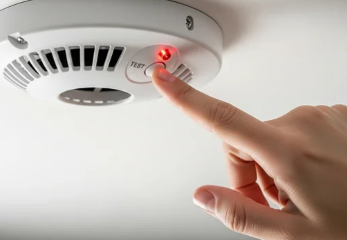

Detector Doctor provides reliable smoke alarm testing and compliance services for homeowners, landlords, and property managers across NSW. My goal is to make safety simple by offering fast service, clear communication, and full compliance with all legal requirements.
I handle everything from annual testing to replacements, water efficiency checks, and access management — so you can stay compliant without the stress.